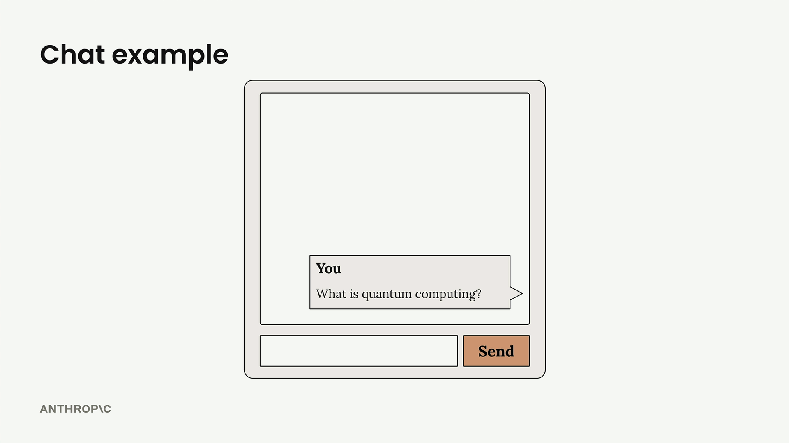
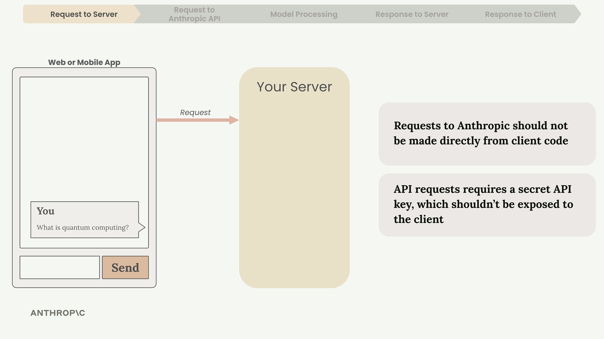
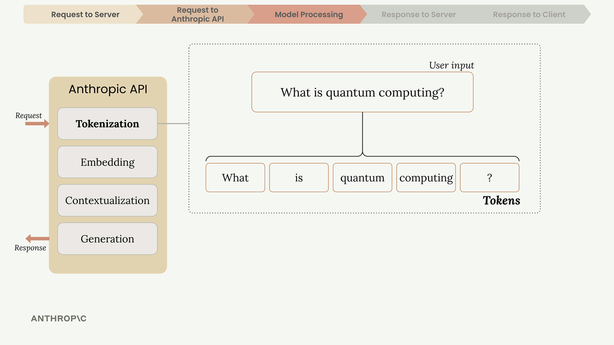
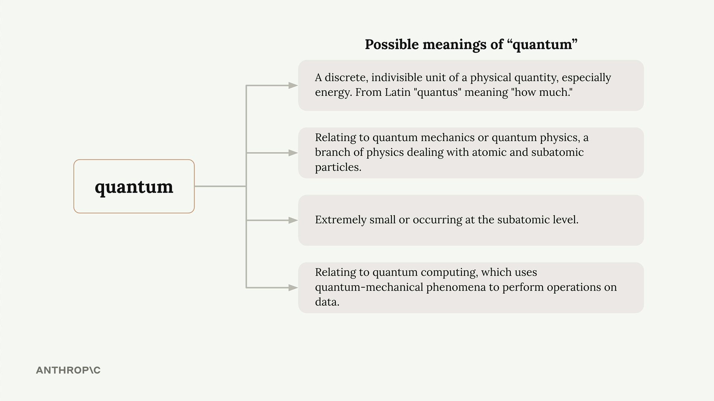
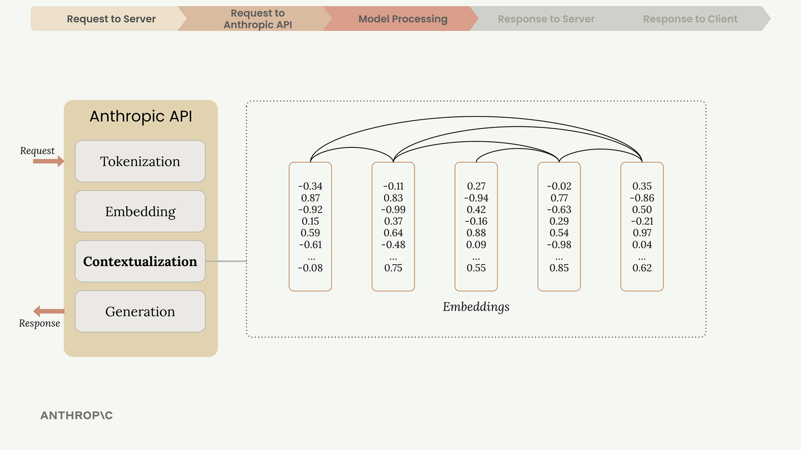
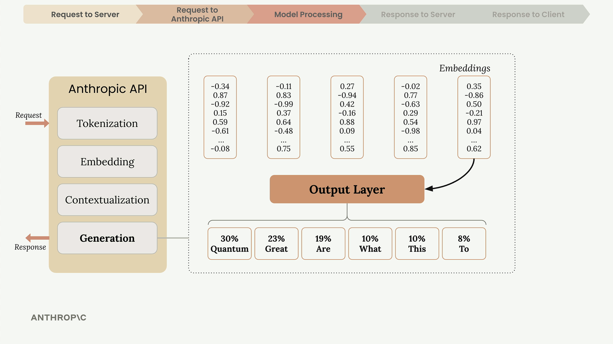
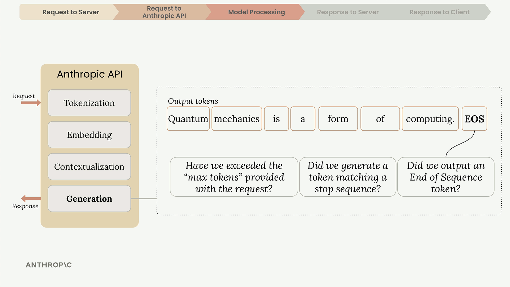

Как устроен запрос
Чему научитесь
Видео 5:18 и текст урока
К концу урока вы сможете:
- пройти путь запроса от кнопки «отправить» до текста на экране;
- объяснить, зачем между приложением и Anthropic API нужен свой сервер;
- назвать обязательные поля запроса, стадии обработки и причины остановки генерации.
Видео и текст урока.
Смотреть урок на Skilljar Accessing the API · 5:18Когда вы строите приложение на Claude, полезно понимать весь жизненный цикл запроса: так проще принимать архитектурные решения и искать ошибки. Разберём, что происходит с момента, когда пользователь нажимает «отправить» в чате, до момента, когда ответ Claude появляется на экране.

Пять шагов запроса
Любое обращение к Claude проходит по одной и той же схеме из пяти фаз: запрос на сервер, запрос в Anthropic API, обработка моделью, ответ серверу и ответ клиенту.

Зачем нужен свой сервер
Никогда не обращайтесь к Anthropic API напрямую из клиентского кода. Причины такие:
- для запросов к API нужен секретный ключ;
- ключ в клиентском коде — серьёзная уязвимость;
- любой может достать ключ и слать запросы от вашего имени.
Поэтому веб- или мобильное приложение отправляет запрос на ваш собственный сервер, а уже он обращается к Anthropic API с ключом, который надёжно хранится на нём.
Как сервер делает запрос к API
Сервер может обращаться к Anthropic API через официальный SDK или обычными HTTP-запросами. Anthropic выпускает SDK для Python, TypeScript, JavaScript, Go и Ruby.

В каждом запросе обязательно есть поля:
- API Key — по нему Anthropic понимает, чей это запрос;
- Model — имя модели, например
"claude-3-sonnet"; - Messages — список с текстом пользователя;
- Max Tokens — сколько токенов Claude может сгенерировать максимум.
Что происходит внутри Claude
Получив запрос, Claude обрабатывает его в четыре стадии: токенизация, эмбеддинг, контекстуализация и генерация.

Токенизация
Сначала Claude режет входной текст на небольшие куски — токены. Это могут быть целые слова, части слов, пробелы или символы. Для простоты считайте, что одно слово — один токен.
Эмбеддинг
Каждый токен превращается в эмбеддинг — длинный список чисел, который описывает все возможные значения этого слова. Эмбеддинги можно представлять как числовые определения, которые передают смысловые связи между словами.

У слов часто несколько значений. Например, «quantum» может означать:
- дискретную порцию физической величины (физика);
- понятия квантовой механики или квантовой физики;
- что-то крайне малое, субатомное;
- применения квантовых вычислений.
Контекстуализация
Claude уточняет каждый эмбеддинг по соседним словам, чтобы определить самое вероятное значение в этом контексте. Числовые представления подстраиваются так, чтобы на первый план вышло подходящее определение.

Генерация
Контекстуализированные эмбеддинги проходят через выходной слой (output layer), который считает вероятность каждого возможного следующего слова. Claude не всегда берёт самое вероятное слово: он сочетает вероятность с управляемой случайностью, чтобы ответы звучали естественно и разнообразно.

Выбрав слово, Claude дописывает его в последовательность и повторяет весь процесс для следующего слова.
Когда Claude останавливается
После каждого токена Claude проверяет несколько условий, чтобы решить, продолжать ли:

- Достигнут max tokens — упёрлись в заданный вами лимит?
- Естественное окончание — сгенерирован токен конца последовательности?
- Stop sequence — встретилась заранее заданная стоп-фраза?
Ответ API
Когда генерация закончена, API возвращает структурированный ответ, в котором есть:
- Message — сгенерированный текст;
- Usage — число входных и выходных токенов;
- Stop Reason — почему генерация закончилась.

Сервер получает этот ответ и пересылает сгенерированный текст клиентскому приложению, где тот появляется в интерфейсе.

Главное
Понимание этого пути помогает:
- строить безопасную архитектуру, в которой API-ключ защищён;
- выставлять подходящий лимит токенов под задачу;
- по-разному обрабатывать разные причины остановки;
- искать ошибки, понимая, на каком шаге цепочки они могут возникать.
Заучивать каждую деталь не нужно: цель урока — познакомиться с терминами и общей схемой, с которыми вы будете сталкиваться при работе с Claude API.
Дальше
Следующий шаг — создать API-ключ в консоли: без него первый запрос не сделать.
Оригинал урока: Accessing the API.